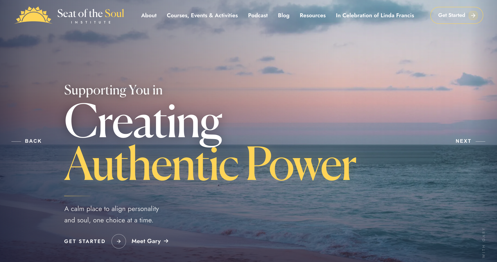
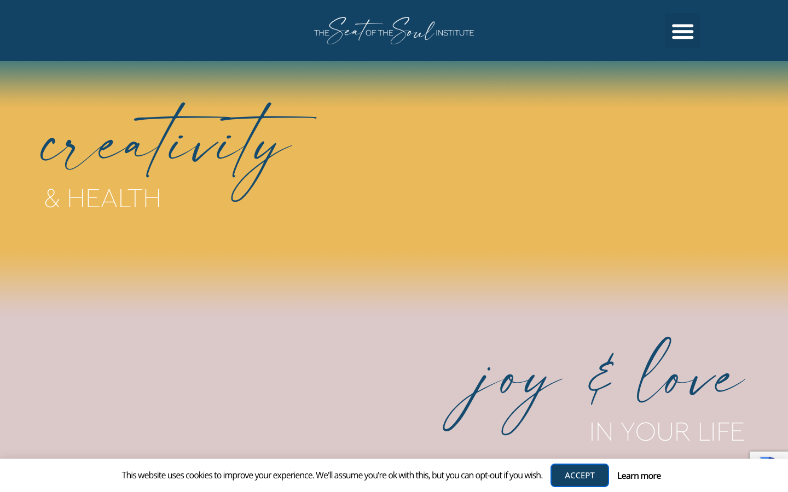
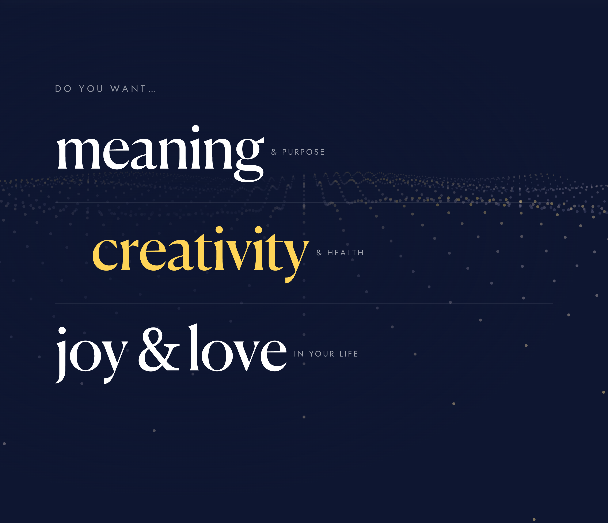
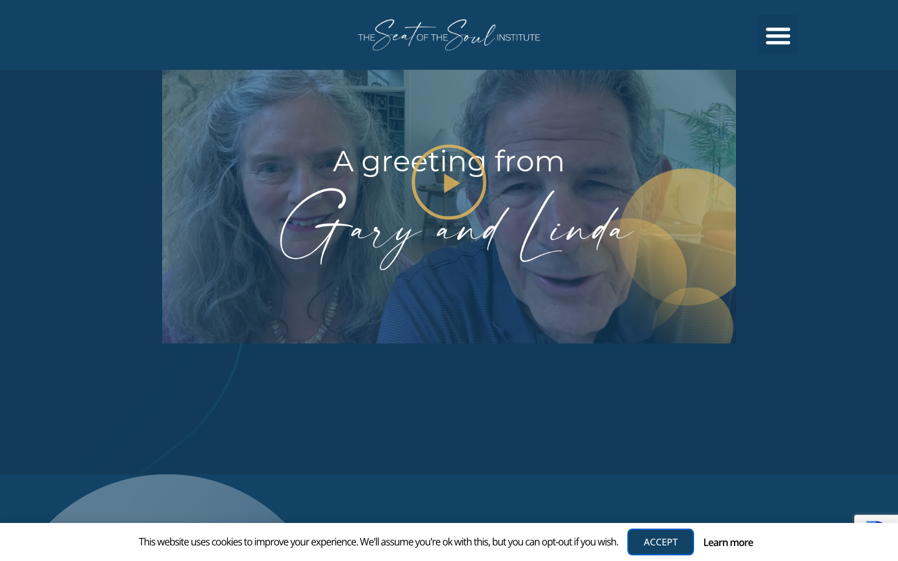
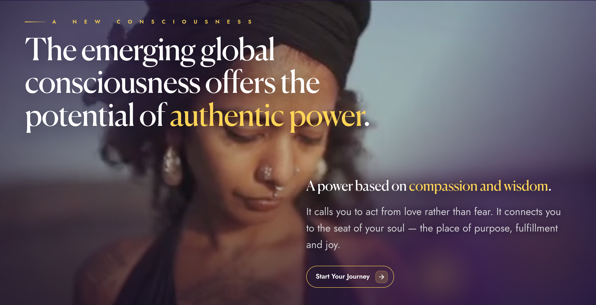
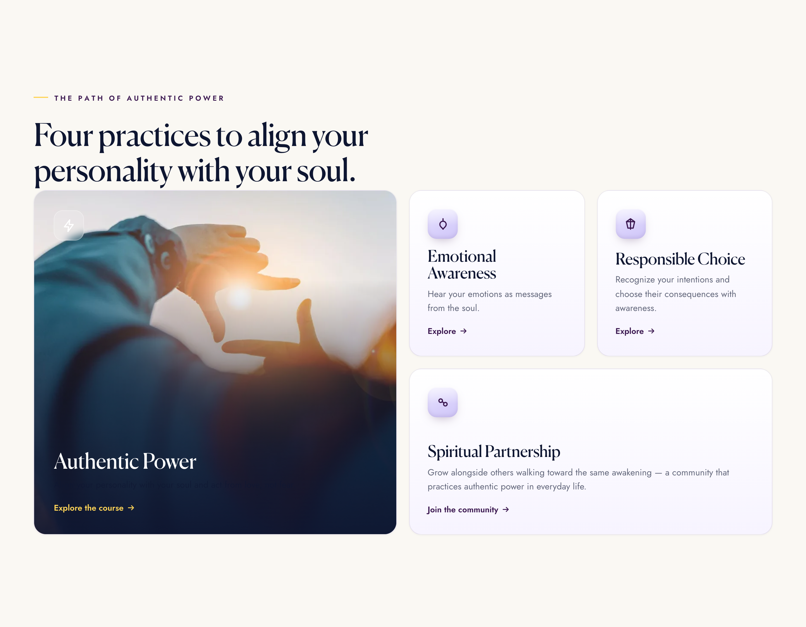
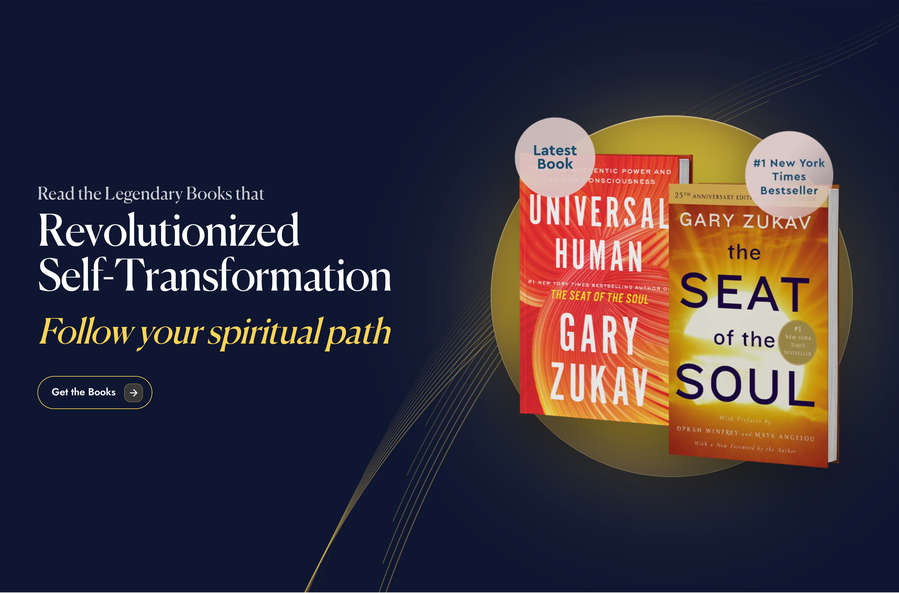
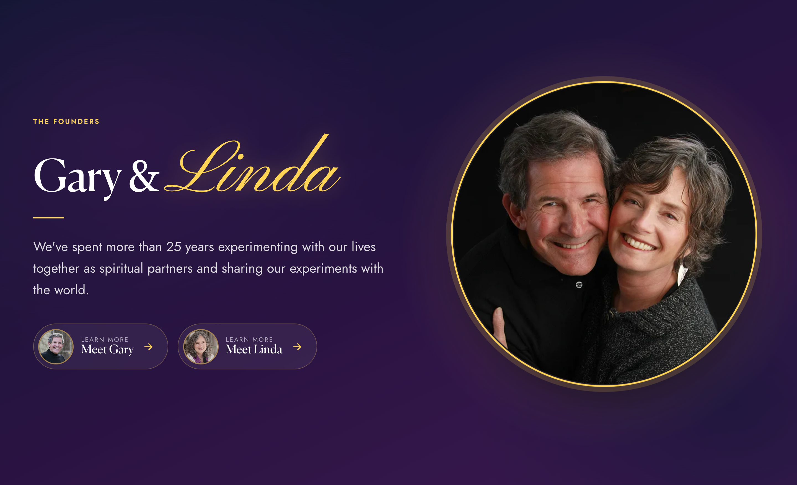
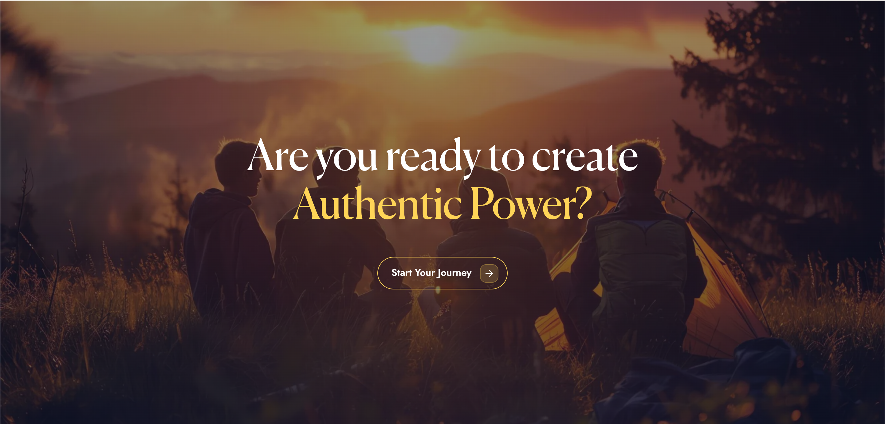
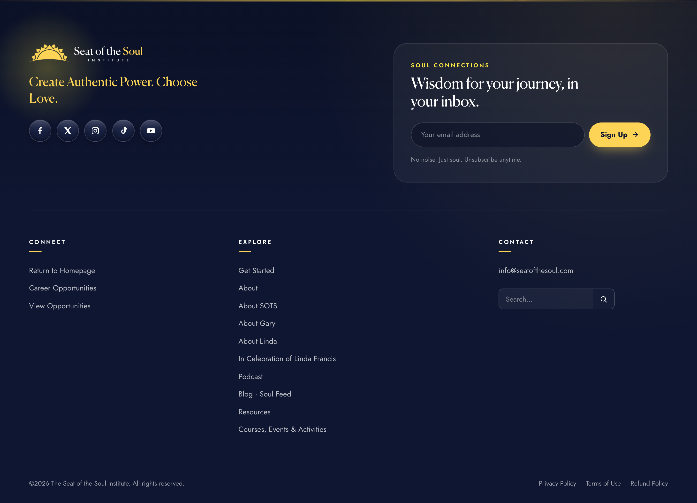

The New Proposal · June 2026
A home worthy of
the message.
A redesigned home experience, a refreshed brand, and a modern, secure platform — shown side by side with the current site so the improvement is visible, not just described.
The vision
Calm, premium, and findable
- Says what the Institute offers in 5 seconds, then guides with intention.
- Built for a multi-generational audience — large, legible type; high contrast; an unhurried flow.
- One clear action per section, led by composition and color, not pressure.
- Found in the AI-search era — engineered for SEO + AEO + GEO from day one.
- Secure & low-maintenance — delivered on Webflow, no plugins to patch.
A refreshed identity
The same soul, made legible
- Redesigned logo — a rising sun + book icon, redrawn to read instantly at any size and age.
- A real type pairing — refined serif headlines + a clean sans body; script reserved for rare emotional accents.
- Three coordinated themes (Navy · Cosmic · Light) so the brand flexes without ever drifting off.
The hero · drag to compare
One clear message


From a mixed carousel + hidden menu → a focused promise (“Creating Authentic Power”), a readable menu, two clear entry points (Get Started / Meet Gary), and subtle edge controls.
“Do you want…” · drag to compare
The same powerful words — finally easy to read


Oversized, widely-spaced handwriting on flat yellow → instantly legible, “creativity” lifted in gold over calm navy with a gentle wave of light. Less is more, done right.
Greeting from Gary & Linda · drag to compare
Reached fast, felt fully


A tighter flow gets visitors to the welcome video quickly, in a warm, distraction-free frame designed to feel like sitting down to watch.
Consciousness
One cohesive section
The old layout split this idea into three stacked pieces, and the video covered the lines above and below it. Now it’s a single, cinematic composition where color and type-size guide the eye to the action — and nothing gets hidden.

The journey continues
Browse, believe, belong



The closing call
An image that makes you want to belong
“Are you ready to create Authentic Power?” A warm, human scene closes the story and leads to one clear next step.

A footer that never goes stale · drag to compare
Organized — and self-updating


Grouped by intent (Connect · Explore · Contact), with a copyright year that updates itself — no more “© 2025” lingering into the next year.
UX & interaction
Designed to guide, not to shout
| Current site | Proposal | |
|---|---|---|
| Desktop menu | Hidden behind a hamburger | Full, readable menu + dropdowns |
| Slider controls | Easy to mis-click into content | Subtle, deliberate Back / Next |
| Reading flow | Centered, even emphasis | Headline → image → soft CTA |
| Time to the welcome video | Long scroll | Reached quickly |
| Motion & accessibility | Uncontrolled, low contrast | Purposeful, AA contrast, “reduce motion” aware |
Performance
From “unusable on mobile” → fast
Built for SEO · AEO · GEO
Engineered to be cited
llms.txt + author bylines/dates (E-E-A-T) on the blogGrounded in your analytics · GA4 · last 12 months
We're improving this for the audience you already have
| Today (your data) | The new site | |
|---|---|---|
| Mobile share | 56% — on the slowest pages | Fast, mobile-first (LCP <2.5s) |
| Home page | #1 entry (47,975) · ~70% bounce | Rebuilt — clearer, guided flow |
| Best channel | Organic 56% eng · only 23% of traffic | Built-in SEO grows it past the ceiling |
| AI assistants | 9 sessions all year | FAQ + entity data → citable by AI |
| Key actions | 2.8% of sessions | One clear CTA per section |
The roadmap
A clear path to launch
llms.txt, and Core Web Vitals tuning.The ask
Three green lights
- Confirm direction on the home redesign and brand refresh.
- Verify a short list of facts before publishing — impact numbers, testimonial rights, credentials for the structured data, and the Linda Francis tribute framing.
- Green-light the Webflow go-live sequence (domain, redirects, SEO/AEO/GEO layer).
The brand is already exceptional. This gives it a home — fast, secure, beautiful, and findable — that finally does the work justice.